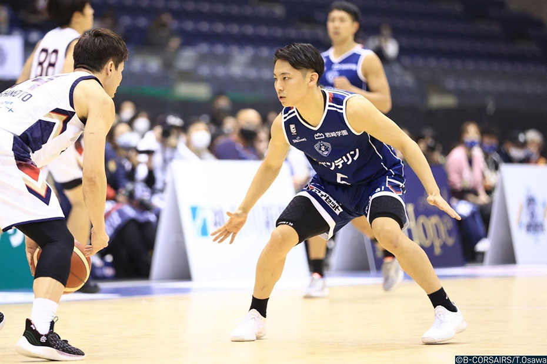
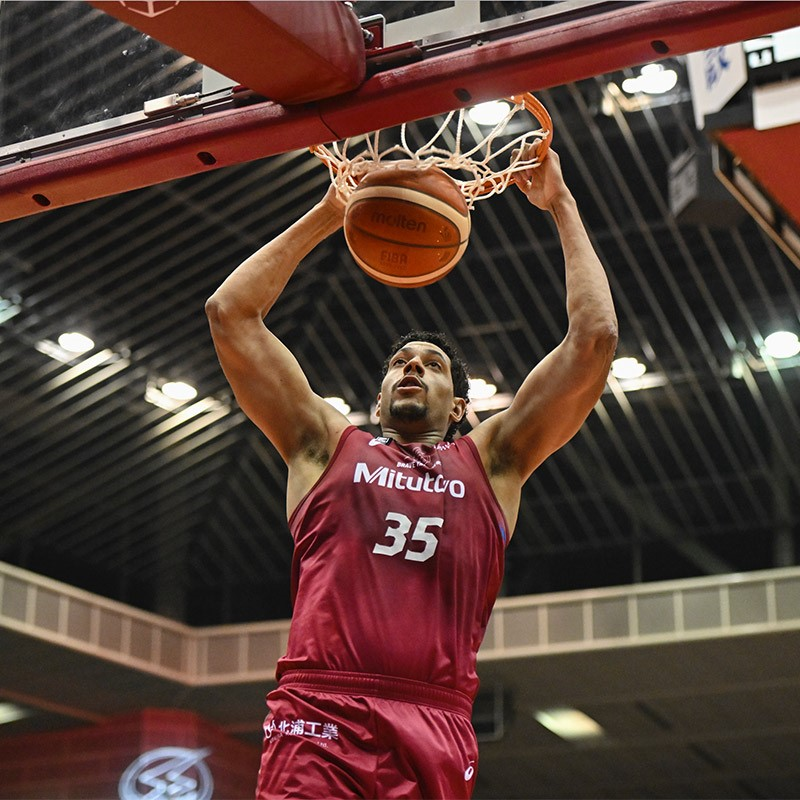
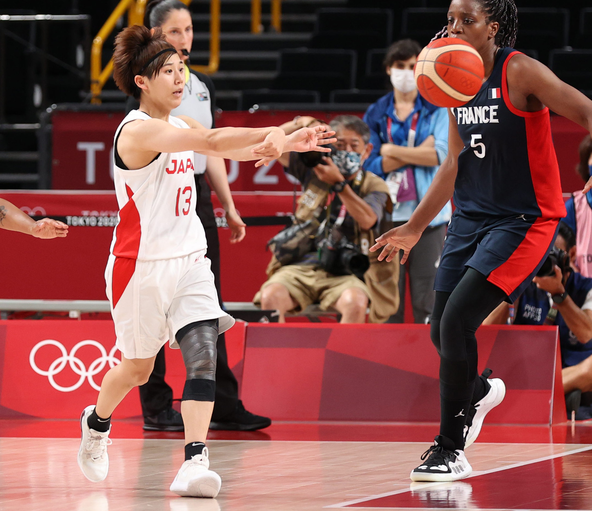
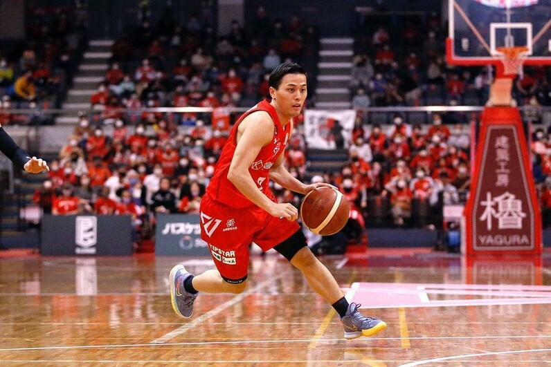

ボールの扱いを上達させるためのドリブル練習方法を紹介します。
ドリブル練習

- 左右の手でのドリブル練習
- 利き手と逆の手でも確実にドリブルできるように練習します。まずは静止状態から始め、徐々に動きを加えていきます。
- 交互の手でのドリブル練習
- 左右交互にドリブルを繰り返し、ボールをコントロールする感覚を養います。スピードを上げることで、反射神経も鍛えられます。
- ドリブルしながらの方向転換
- ドリブルしながら急に方向を変える練習を行います。試合中の相手をかわす動きに役立ちます。
シュート練習

正確なシュートを打つための練習方法を紹介します。
- フリースロー練習
- フリースローラインからのシュートを繰り返し練習し、正確性を高めます。フォームの確認や精神集中も重要です。
- 3ポイントシュート練習
- 3ポイントラインからのシュートを繰り返し練習します。距離感を掴むことと、スナップシュートのフォームを確立することが目標です。
- ミッドレンジシュート練習
- ゴールから少し離れた位置からのシュートを練習します。シュートの安定性を高め、中距離からも得点を狙えるようになります。
パス練習

効果的なパスをするための練習方法を紹介します。
- チェストパス
- 両手でボールを胸の高さから押し出すようにしてパスを行います。基本的なパスであり、正確に相手に届ける練習が必要です。
- バウンズパス
- ボールを一度床にバウンドさせてから相手に届けるパスです。ディフェンスを避けるために有効です。
- オーバーヘッドパス
- ボールを頭の上から投げるようにしてパスを行います。遠くにいる味方にパスをする際に使います。
ディフェンス練習

相手の攻撃を防ぐためのディフェンス練習方法を紹介します。
- マンツーマンディフェンス
- 相手プレイヤーに密着し、自由に動けないように守ります。相手の動きを予測し、素早く反応することが重要です。
- ゾーンディフェンス
- 特定のエリアを守るディフェンス方法です。チーム全体の連携が求められ、相手の攻撃パターンを読んで対応します。
- リバウンド練習
- シュートが外れた後のボールを確保する練習です。ジャンプ力とポジショニングが重要で、セカンドチャンスを防ぎます。